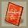
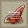
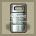
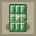

Shield
โล่

Youth Shield
คลิกเพื่อดูตัวอย่าง
Level : 1
พลังป้องกัน[Def-M Def-S Avoid-L Avoid-M Resist] : 1-1-1-1-1
น้ำหนัก / ความจุ / น้ำหนักตอนสวมใส่ : 12.0 / 7.0 / 8.0
ความทนทานสูงสุด : 25
อาชีพที่สวมใส่ : All
แหล่งที่มา : Happy New Year Ticket[Cash Shop ปี 2552]

Midnight Shield
คลิกเพื่อดูตัวอย่าง
Level : 1
พลังป้องกัน[Def-M Def-S Avoid-L Avoid-M Resist] : 1-1-1-1-1
น้ำหนัก / ความจุ / น้ำหนักตอนสวมใส่ : 12.0 / 8.0 / 8.0
ความทนทานสูงสุด : 10
อาชีพที่สวมใส่ : All
แหล่งที่มา : ECO ปาถั่ว...กลัวยักษ์ (ซะเมื่อไหร่!!) Event

Grand Graduator
คลิกเพื่อดูตัวอย่าง
Level : 1
พลังป้องกัน[Def-M Def-S Avoid-L Avoid-M Resist] : 1-1-1-1-1
น้ำหนัก / ความจุ / น้ำหนักตอนสวมใส่ : 12.0 / 7.0 / 8.0
ความทนทานสูงสุด : 25
อาชีพที่สวมใส่ : All
แหล่งที่มา : Special Ticket 12[Cash Shop]

Wood Shield
คลิกเพื่อดูตัวอย่าง
Level : 1
พลังป้องกัน[Def-M Def-S Avoid-L Avoid-M Resist] : 3-1-1-1-0
น้ำหนัก / ความจุ / น้ำหนักตอนสวมใส่ : 3.5 / 4.9 / 7.0
ความทนทานสูงสุด : 15
อาชีพที่สวมใส่ : Novice / FT / Warlock Class
แหล่งที่มา : Merchant Guild /
Protection Create LV 1
ราคา : 950 G
Leather Shield
คลิกเพื่อดูตัวอย่าง
Level : 8
พลังป้องกัน[Def-M Def-S Avoid-L Avoid-M Resist] : 5-2-3-3-1
น้ำหนัก / ความจุ / น้ำหนักตอนสวมใส่ : 4.2 / 4.9 / 7.0
ความทนทานสูงสุด : 18
อาชีพที่สวมใส่ : FT / Warlock Class
แหล่งที่มา : Merchant Guild[Eastor Cape] /
Protection Create LV 2
ราคา : 1,300 G

Round Shield
คลิกเพื่อดูตัวอย่าง
Level : 15
พลังป้องกัน[Def-M Def-S Avoid-L Avoid-M Resist] : 7-3-5-5-3
น้ำหนัก / ความจุ / น้ำหนักตอนสวมใส่ : 5.6 / 4.9 / 7.0
ความทนทานสูงสุด : 20
อาชีพที่สวมใส่ : Novice / FT / Warlock Class
แหล่งที่มา : Stall Merchant[Iron City Downstairs] /
Protection Create LV 3
ราคา : 2,600 G

Shakra
คลิกเพื่อดูตัวอย่าง
Level : 20
พลังป้องกัน[Def-M Def-S Avoid-L Avoid-M Resist] : 10-5-8-8-5
น้ำหนัก / ความจุ / น้ำหนักตอนสวมใส่ : 7.0 / 4.9 / 7.0
ความทนทานสูงสุด : 20
อาชีพที่สวมใส่ : Novice / FT / Warlock Class
แหล่งที่มา : South Armor Seller[Sourin Cape]
ราคา : 2,600 G
Sword Stopper
คลิกเพื่อดูตัวอย่าง
Level : 20
พลังป้องกัน[Def-M Def-S Avoid-L Avoid-M Resist] : 5-5-10-10-5
น้ำหนัก / ความจุ / น้ำหนักตอนสวมใส่ : 8.4 / 5.6 / 8.0
ความทนทานสูงสุด : 15
อาชีพที่สวมใส่ : FT / Warlock Class / Ranger Class / Breeder / Gardener
แหล่งที่มา : Weapon Seller[Fareast City] / Caravan Merchant[Steap Desert] /
Protection Create LV 5
ราคา : 30,000 G
Iron Shield
คลิกเพื่อดูตัวอย่าง
Level : 22
พลังป้องกัน[Def-M Def-S Avoid-L Avoid-M Resist] : 12-7-7-7-5
น้ำหนัก / ความจุ / น้ำหนักตอนสวมใส่ : 10.5 / 4.9 / 7.0
ความทนทานสูงสุด : 25
อาชีพที่สวมใส่ : Novice / FT / Warlock Class
แหล่งที่มา : Merchant Guild[Iron City Downstair] / Weapon Seller[Fareast City]
ราคา : 11,000 G

Shield of Crest
คลิกเพื่อดูตัวอย่าง
Level : 22
พลังป้องกัน[Def-M Def-S Avoid-L Avoid-M Resist] : 8-3-9-9-5
น้ำหนัก / ความจุ / น้ำหนักตอนสวมใส่ : 7.0 / 4.9 / 7.0
ความทนทานสูงสุด : 20
อาชีพที่สวมใส่ : Novice / FT / Warlock Class
แหล่งที่มา : Merchant Guild[Iron City Downstair] / Weapon Seller[Fareast City]
ราคา : 11,000 G

Targe Shield
คลิกเพื่อดูตัวอย่าง
Level : 25
พลังป้องกัน[Def-M Def-S Avoid-L Avoid-M Resist] : 13-7-10-10-5
น้ำหนัก / ความจุ / น้ำหนักตอนสวมใส่ : 7.0 / 4.9 / 7.0
ความทนทานสูงสุด : 20
อาชีพที่สวมใส่ : Novice / FT
แหล่งที่มา : South Armor Seller[Sourin Cape]
ราคา : 15,000 G

Steel Sword Stopper
คลิกเพื่อดูตัวอย่าง
Level : 30
พลังป้องกัน[Def-M Def-S Avoid-L Avoid-M Resist] : 7-7-10-10-5
น้ำหนัก / ความจุ / น้ำหนักตอนสวมใส่ : 12.6 / 5.6 / 8.0
ความทนทานสูงสุด : 20
อาชีพที่สวมใส่ : FT / Warlock Class / Ranger Class / Breeder / Gardener
แหล่งที่มา : Caravan Merchant[Steap Desert]
ราคา : 35,000 G

Magic Sword Stopper
คลิกเพื่อดูตัวอย่าง
Level : 30
พลังป้องกัน[Def-M Def-S Avoid-L Avoid-M Resist] : 3-3-12-12-5
น้ำหนัก / ความจุ / น้ำหนักตอนสวมใส่ : 8.4 / 5.6 / 8.0
ความทนทานสูงสุด : 20
อาชีพที่สวมใส่ : FT / Warlock Class / Ranger Class / Breeder / Gardener
แหล่งที่มา : Caravan Merchant[Steap Desert]
ราคา : 35,000 G
Kite Shield
คลิกเพื่อดูตัวอย่าง
Level : 30
พลังป้องกัน[Def-M Def-S Avoid-L Avoid-M Resist] : 15-9-12-12-6
น้ำหนัก / ความจุ / น้ำหนักตอนสวมใส่ : 10.5 / 5.6 / 8.0
ความทนทานสูงสุด : 20
อาชีพที่สวมใส่ : FT
แหล่งที่มา : Weapon Seller[Northan Promnard] /
Protection Create LV 5
ราคา : 18,000 G

Steel Shield
คลิกเพื่อดูตัวอย่าง
Level : 32
พลังป้องกัน[Def-M Def-S Avoid-L Avoid-M Resist] : 17-11-11-11-5
น้ำหนัก / ความจุ / น้ำหนักตอนสวมใส่ : 14.0 / 5.6 / 8.0
ความทนทานสูงสุด : 25
อาชีพที่สวมใส่ : FT
แหล่งที่มา : Weapon Seller[Northan Promnard]
ราคา : 20,000 G

Fang Shield
คลิกเพื่อดูตัวอย่าง
Level : 32
พลังป้องกัน[Def-M Def-S Avoid-L Avoid-M Resist] : 13-7-13-13-6
น้ำหนัก / ความจุ / น้ำหนักตอนสวมใส่ : 10.5 / 5.6 / 8.0
ความทนทานสูงสุด : 20
อาชีพที่สวมใส่ : FT
แหล่งที่มา : Weapon Seller[Northan Promnard]
ราคา : 20,000 G
Scout Glove
คลิกเพื่อดูตัวอย่าง
Level : 35
พลังป้องกัน[Def-M Def-S Avoid-L Avoid-M Resist] : 15-8-10-10-5
น้ำหนัก / ความจุ / น้ำหนักตอนสวมใส่ : 17.5 / 4.2 / 3.0
ความทนทานสูงสุด : 20
อาชีพที่สวมใส่ : Scout Class
แหล่งที่มา : Treasure 7
Shell Shield
คลิกเพื่อดูตัวอย่าง
Level : 40
พลังป้องกัน[Def-M Def-S Avoid-L Avoid-M Resist] : 10-20-6-6-10
น้ำหนัก / ความจุ / น้ำหนักตอนสวมใส่ : 13.0 / 8.0 / 8.0
ความทนทานสูงสุด : 25
อาชีพที่สวมใส่ : Novice / FT / Warlock Class / Ranger Class / Breeder / Gardener
แหล่งที่มา : Weapon Mermaid[Waterlayer] /
Protection Creat LV 4
ราคา : 23,000 G
Solid Shield
คลิกเพื่อดูตัวอย่าง
Level : 45
พลังป้องกัน[Def-M Def-S Avoid-L Avoid-M Resist] : 15-9-12-12-5
น้ำหนัก / ความจุ / น้ำหนักตอนสวมใส่ : 7.0 / 4.9 / 7.0
ความทนทานสูงสุด : 20
อาชีพที่สวมใส่ : FT / Warlock Class / Ranger Class / Breeder / Gardener
แหล่งที่มา : Weapon Mermaid[Waterlayer] / Weapon Seller[Tonka Island]
ราคา : 23,000 G

Spike Shield
คลิกเพื่อดูตัวอย่าง
Level : 45
พลังป้องกัน[Def-M Def-S Avoid-L Avoid-M Resist] : 19-13-10-10-6
น้ำหนัก / ความจุ / น้ำหนักตอนสวมใส่ : 11.2 / 6.3 / 9.0
ความทนทานสูงสุด : 25
อาชีพที่สวมใส่ : FT
แหล่งที่มา :
แลกแหวน Rinra /
Protection Creat LV 4

Heater Shield(Red)
คลิกเพื่อดูตัวอย่าง
Level : 52
พลังป้องกัน[Def-M Def-S Avoid-L Avoid-M Resist] : 21-15-10-10-6
น้ำหนัก / ความจุ / น้ำหนักตอนสวมใส่ : 14.0 / 8.4 / 12.0
ความทนทานสูงสุด : 25
อาชีพที่สวมใส่ : FT
แหล่งที่มา : Black Market Worker[Bastion of Fushigi Guild]
ราคา : 24,000 G

Heater Shield(Silver)
คลิกเพื่อดูตัวอย่าง
Level : 52
พลังป้องกัน[Def-M Def-S Avoid-L Avoid-M Resist] : 21-15-10-10-6
น้ำหนัก / ความจุ / น้ำหนักตอนสวมใส่ : 14.0 / 8.4 / 12.0
ความทนทานสูงสุด : 25
อาชีพที่สวมใส่ : FT
แหล่งที่มา : Black Market Worker[Bastion of Fushigi Guild]
ราคา : 24,000 G

Crystal Shield
คลิกเพื่อดูตัวอย่าง
Level : 60
พลังป้องกัน[Def-M Def-S Avoid-L Avoid-M Resist] : 23-17-10-10-6
น้ำหนัก / ความจุ / น้ำหนักตอนสวมใส่ : 19.6 / 8.4 / 12.0
ความทนทานสูงสุด : 25
อาชีพที่สวมใส่ : FT
แหล่งที่มา :
Quest Weapon LV 60 / Treasure 11
ราคา : 26,000 G

Beem Shield
คลิกเพื่อดูตัวอย่าง
Level : 60
พลังป้องกัน[Def-M Def-S Avoid-L Avoid-M Resist] : 21-15-12-12-5
น้ำหนัก / ความจุ / น้ำหนักตอนสวมใส่ : 16.8 / 4.9 / 7.0
ความทนทานสูงสุด : 25
อาชีพที่สวมใส่ : FT / Warlock Class / Ranger Class / Breeder / Gardener
แหล่งที่มา :
Quest Weapon LV 60
ราคา : 27,500 G

Composite Shield(Silver)
คลิกเพื่อดูตัวอย่าง
Level : 70
พลังป้องกัน[Def-M Def-S Avoid-L Avoid-M Resist] : 25-19-10-10-0
น้ำหนัก / ความจุ / น้ำหนักตอนสวมใส่ : 18.2 / 11.2 / 16.0
ความทนทานสูงสุด : 20
อาชีพที่สวมใส่ : FT
แหล่งที่มา : Monster[
Hell Diver]

Composite Shield(Dark Blue)
คลิกเพื่อดูตัวอย่าง
Level : 70
พลังป้องกัน[Def-M Def-S Avoid-L Avoid-M Resist] : 25-19-10-10-0
น้ำหนัก / ความจุ / น้ำหนักตอนสวมใส่ : 18.2 / 11.2 / 16.0
ความทนทานสูงสุด : 20
อาชีพที่สวมใส่ : FT
แหล่งที่มา : Monster[
Sky Rider]

Magic Shield
คลิกเพื่อดูตัวอย่าง
Level : 80
พลังป้องกัน[Def-M Def-S Avoid-L Avoid-M Resist] : 20-25-10-10-10
น้ำหนัก / ความจุ / น้ำหนักตอนสวมใส่ : 7.0 / 4.9 / 7.0
ความทนทานสูงสุด : 25
อาชีพที่สวมใส่ : Novice / FT / Warlock Class / Ranger Class / Breeder / Gardener
แหล่งที่มา : Monster[
Vendy] / Lump Machine / Container 5 /

Reactive Shield
คลิกเพื่อดูตัวอย่าง
Level : 80
พลังป้องกัน[Def-M Def-S Avoid-L Avoid-M Resist] : 27-21-10-10-0
น้ำหนัก / ความจุ / น้ำหนักตอนสวมใส่ : 19.6 / 11.2 / 16.0
ความทนทานสูงสุด : 25
อาชีพที่สวมใส่ : FT
แหล่งที่มา : Monster[
Vendy /
Rirecal] / Lump Machine / Container 5 / Container 6

Seal Shield
คลิกเพื่อดูตัวอย่าง
Level : 90
พลังป้องกัน[Def-M Def-S Avoid-L Avoid-M Resist] : 29-23-10-10-5
น้ำหนัก / ความจุ / น้ำหนักตอนสวมใส่ : 25.0 / 13.0 / 13.0
ความทนทานสูงสุด : 25
อาชีพที่สวมใส่ : FT
แหล่งที่มา :
Quest Weapon LV 90

Scarab Guard
คลิกเพื่อดูตัวอย่าง
Level : 90
พลังป้องกัน[Def-M Def-S Avoid-L Avoid-M Resist] : 23-17-13-13-6
น้ำหนัก / ความจุ / น้ำหนักตอนสวมใส่ : 12.0 / 8.0 / 8.0
ความทนทานสูงสุด : 25
อาชีพที่สวมใส่ : Novice / FT / Warlock Class / Ranger Class / Breeder / Gardener
แหล่งที่มา :
Quest Weapon LV 90

Black Wolf Shield
คลิกเพื่อดูตัวอย่าง
Level : 99
พลังป้องกัน[Def-M Def-S Avoid-L Avoid-M Resist] : 30-25-14-14-11
น้ำหนัก / ความจุ / น้ำหนักตอนสวมใส่ : 21.0 / 10.5 / 15.0
ความทนทานสูงสุด : 20
อาชีพที่สวมใส่ : Swordman Class
แหล่งที่มา : ??